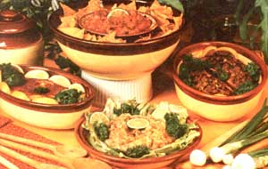

You may be missing out on one of the most versatile vegetable treats around!
The solid, plump, firm-skinned eggplant is one of the handsomest-and tastiest vegetables available. Ever since the Moors brought this purple fruit to the Mediterranean region-sometime during the Middle Ages-folks in Italy and France (as well as people throughout the Middle East) have been whipping up delicious eggplant dishes. Here are a few of my favorites:
Broil a good-sized, unpeeled eggplant-under a low flame for 20 to 30 minutes, turning it often. When the vegetable is soft ... remove its skin (which will slip right off) and mash the "meat" into a pulp. Add 1-1 /2 tablespoons of salad oil and 1 tablespoon of vinegar or lemon juice . . . then season the mixture to taste with salt, pepper, garlic salt, and onion salt. Serve the finished dish cold-on lettuce leaves-for a salad that's just as delicious as it is unusual.
Peel 1 large eggplant (or use 2 small ones) and cut the fruit into 1/2-inch slices. Dip each piece in beaten egg and then in flour, brown 'em in heated oil, and let the cooked vegetable drain well on brown paper.
When that's done, place a layer of eggplant in a deep casserole and cover it with tomato sauce. (You'll need about 2 cups of tomato sauce in all, or you can use a No. 303 can of prepared meatless spaghetti sauce with mushrooms.) Sprinkle the surface with Parmesan cheese and "top-layer" it with thinly sliced mozzarella. Repeat this sequence until all the eggplant is used ... finishing off with the mozzarella. Bake the parmigiana in a 400 °F oven for 15 minutes and serve it hot. This exceptionally tasty treat will satisfy five or six hungry people.
Here's a special dish for "special company" . . . which can be served either as a vegetable or as the main course.
Halve a two-pound eggplant lengthwise and scoop out the center, leaving a wall about 1/2 inch thick. Chop up the scooped-out sections ... and saute 'em with 1/2 cup of butter, 1/4 cup of minced onion, 1 clove of minced garlic, and 2 tablespoons of minced celery ... until the onion is golden brown.
In a separate bowl, combine 1 pint of drained and chopped oysters, 1 cup of soft bread crumbs, 1 /4 cup of minced parsley, and 1/2 teaspoon of thyme ... then stir this combination into the cooked ingredients. Spoon the mixture into the eggplant shells, place 'em in a buttered heatproof dish, and bake at 375°F for 30 minutes. These elegant eggplant "boats" will serve six people.
This superlative eggplant extravaganza from France is served cold as an hors d'oeuvre, and-in Italy-is used as an equally unusual and delicious hot vegetable side dish.
First boil or bake an eggplant, and while it's cooking-chop 1 onion, 1 seeded green pepper, and 1 tomato into very fine pieces. Add 1 thinly sliced zucchini and 1 clove of minced garlic . . . then heat up 4 tablespoons of olive oil in a large skillet and sauté the mixture until its ingredients are limp and tender. When the eggplant is done, peel it, chop it very fine, and add it to the skillet ... flavored with 2 tablespoons of red wine, a little oregano, salt, and pepper. Mix everything well, stir in half a can of tomato paste, and-finally-simmer the mouthwaterin' delight for 45 minutes.
You can serve this dish hot, or chill the delicacy and offer it as a dip ... with crackers or potato chips. Either way, your guests will love it!
Wash and peel a firm eggplant, cut it into 1/2-inch slices, and season the chunks with salt, pepper, and a dash of paprika. Then sprinkle a mixture of finely chopped parsley, garlic, and bread crumbs over the vegetable. Place the slices-with a thin coat of olive oil on top-on a lightly greased piepan . .. and broil the dish until it's lightly browned and tender.
While the eggplant is cooking, cut a couple of medium-sized tomatoes in half, season 'em with salt and pepper, and sprinkle some of the parsley/garlic/bread-crumb mixture on top. Dot the fruit halves with butter, place 'em on another lightly greased pie plate or baking pan, and grill 'em slowly in the oven until lightly browned.
When serving, arrange the tomato halves on top of the eggplant . . . and you'll produce a treat that's handsome enough to grace any table!
And-finally-here's an eggplant tip that turns an ordinary meat loaf into something special indeed! Simply use your favorite recipe . . . but alternate layers of the ground beef mixture with slices of raw eggplant. Bake the loaf for the usual time .. . then sit back and soak in the rave reviews!
EDITOR'S NOTE: Three of MOTHER'S recipe taster/testers "had at" Beatrice's eggplant delights with the following results:
Both the Parmiglana and Continental dishes got top ratings, and the latter was reported to be delicious when added to pinto beans, too. MS. Levin's Salad Supreme recipe was also well received . . . although our tester noted that the color of the finished product was an unappetizing (to some) "okra" green. (The vegetarians in the crowd loved it, but several less adventurous folks declined a chance to taste the dish.) The Provençale was also popular . . . especially when the eggplant was cooked until tender before the other ingredients were placed on top. And Beatrice's Eggplant With Oysters was reported to have a pleasing poultry-dressing-like texture and a flavor especially agreeable to seafood fans.
|
 |
|
|